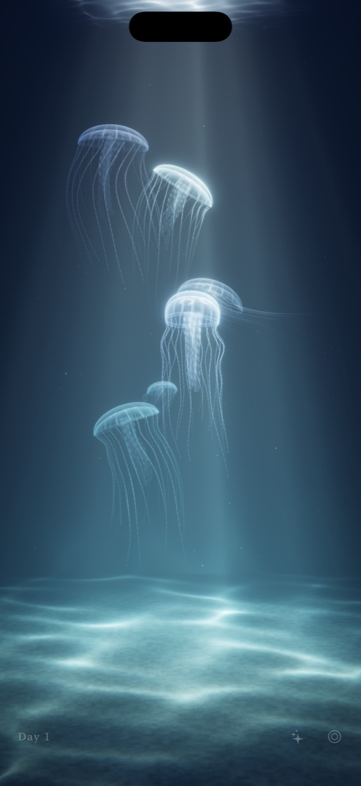
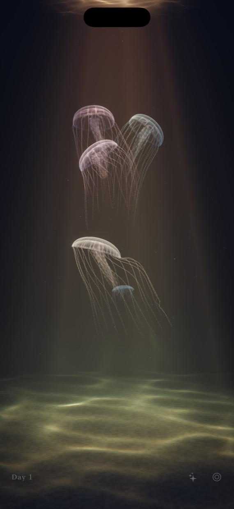
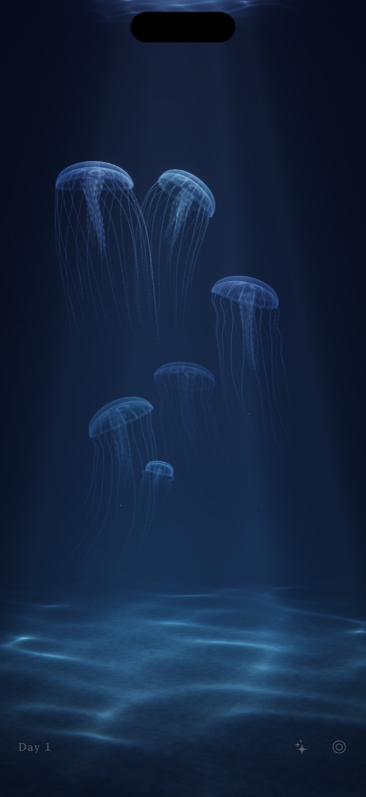
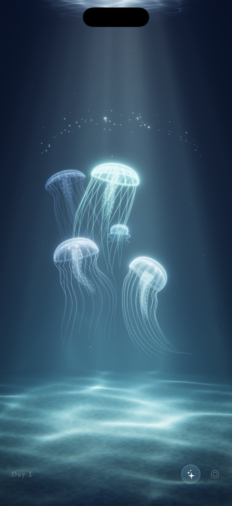

淡いスポットライトに照らされた水の中で、
透きとおったクラゲたちがゆったりと漂います。
水面から降りてくる光のゆらめき、底に映る光の網目、傘を広げて泳ぐやわらかな動き。ただ眺めているだけで、気持ちがすっと静かになる水槽です。
完全放置で育つ
最初は小さな赤ちゃんクラゲ。何日もかけて少しずつ大きくなり、やがて子どもを産んで仲間が増えていきます。特別な操作は何もいりません。
ときどき、そっと世話を
- えさマークを押して画面に触れると、星屑のような餌がきらきらと舞い落ちます
- クラゲに触れると、ほのかに光って応えます
- 指でなぞると、水がゆっくりかき混ざります
- iPhone を傾けたり揺らしたりすると、水が波打ちます
やさしく扱ってあげてください
突きすぎたり揺らしすぎたりすると、クラゲは疲れてしまいます。長いあいだ水槽を見に来ないと、少しずつ数が減っていきます。疲れた子も、しばらくすると、あるいは餌をあげると元気を取り戻します。
時間とともに移ろう光
照明は実際の時刻に合わせて、朝は青白く、昼は白く、夕方は暖かな橙に、夜は月明かりのように移り変わります。好きな色に固定することもできます。
画面のスリープを止めれば、置き時計のように水槽を飾っておけます。
A tiny jellyfish tank in your hand
Under a soft spotlight, translucent jellyfish drift slowly through the water. Light shimmers down from the surface, bright patterns ripple across the sand, and each jelly pulses gently as it swims.
- Grows on its own — start with tiny baby jellies; over the days they grow, have little ones, and your tank fills with life.
- A little care, now and then — scatter food that sparkles like stardust, touch a jelly to make it glow, stir the water with your finger, or tilt your iPhone.
- Be gentle — poke or shake them too much and they get tired. Leave the tank too long and their numbers slowly dwindle.
- Light that follows the day — pale blue in the morning, white at noon, warm amber in the evening, moonlight at night.